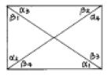
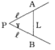
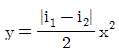
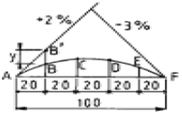
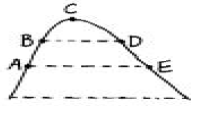
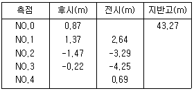
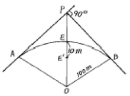

지적기사 (2005-05-29 기출문제)
1과목: 지적측량
1. 경계점좌표등록부에 등록하는 토지의 경계등록방법은?
- 극좌표로 등록한다.
- 평면직각좌표로 등록한다.
- 구면좌표로 등록한다.
- 천문좌표로 등록한다.
(정답률: 알수없음)

2. 지적삼각측량에서는 여러가지 삼각망이 사용되고 있다. 그 중 정확도가 가장 높은 삼각망은?
- 유심 다각망
- 사변형 삼각망
- 삼각쇄
- 단열 삼각망
(정답률: 알수없음)
3. 지적측량기준점 표지 및 관리와 측량성과 보관에 관한 설명 중 틀린 것은?
- 지적삼각보조점표지의 점간거리는 평균 2km 내지 5km로 한다.
- 지적삼각점성과는 시,도지사가 관리한다.
- 지적위성기준점의 점간거리는 평균 30km 내지 50km로 한다.
- 지적도근점성과는 소관청에서 관리한다.
(정답률: 알수없음)
4. 축척 1/1000지역의 측판측량에서 도상에 미치지 않는 지상거리의 한계는?
- 3㎝
- 5㎝
- 10㎝
- 15㎝
(정답률: 알수없음)
5. 다음 그림과 같은 사각망의 오차조정계산에서 계산식(α1+β4) - (α3 + β2) = e 식에 의한 오차 e = -24초가 발생하였을 때 바르게 보정된 것은?

- α1 : -6″
- β4 : -6″
- α3 : -6″
- β2 : +6″
(정답률: 알수없음)
6. 축척 1/1000 지적도의 도곽신축량이 +2㎜일 때 면적보정계수는?
- 0.9884
- 0.9680
- 1.0118
- 0.0102
(정답률: 알수없음)
7. 배각법에 의한 지적도근측량을 배분할 때 측각오차가 -43"이고 측선장의 반수 합이 275.2일 때 65.32m인 변에 배분할 각은?
- -2"
- +2"
- -10"
- +10"
(정답률: 알수없음)
8. 측량성과와 검사성과의 연결교차에 대한 허용범위를 잘못 설명한 것은?
- 지적삼각점 0.10m 이내
- 지적삼각보조점 0.25m 이내
- 지적도근점(경계점좌표등록부 시행지역) 0.15m 이내
- 경계점(경계점좌표등록부 시행지역) 0.10m 이내
(정답률: 알수없음)
9. 지적도근측량에 대한 설명 중 틀린 것은?
- 미리 지적도근점표지를 설치하여야 한다.
- 1등도선은 가, 나, 다순으로 표기한다.
- 지적도근점은 결합도선, 폐합도선, 왕복도선 및 다각망도선으로 구성하여야 한다.
- 지적도근점의 번호는 영구표지를 설치하는 경우에는 시행지역별로 설치순서에 따라 일련번호를 부여한다.
(정답률: 알수없음)
10. 경계점좌표등록부를 비치하는 지역에서 측량대상토지의 경계점간 실측거리가 40m인 경우 경계점의 좌표에 의하여 계산한 거리와의 허용교차는?
- 3cm이내
- 5cm이내
- 7cm이내
- 9cm이내
(정답률: 알수없음)
11. 지적삼각보조측량에서 연결오차가 0.42m이고, 종선차가 0.22m이었다면 횡선차는?
- 0.48m
- 0.21m
- 0.36m
- 0.42m
(정답률: 알수없음)
12. 다음 중 토지면적의 측정을 요하지 않는 것은?
- 신규등록
- 토지분할
- 등록전환
- 토지합병
(정답률: 알수없음)
13. 변수가 20변인 도선을 방위각법으로 지적도근측량을 하여 각 오차가 -6분 발생하였다. 제 12변에 배부할 오차의 배부값은?
- +2분
- +3분
- +4분
- +5분
(정답률: 알수없음)
14. 좌표면적 계산법으로 면적을 측정할 경우 산출 면적의 계산 단위는?
- 1/100m2 단위까지 계산한다.
- 1/1,000m2 단위까지 계산한다.
- 1/10,000m2 단위까지 계산한다.
- 1/100,000m2 단위까지 계산한다.
(정답률: 알수없음)
15. 측판측량방법에 의한 세부측량의 시행요령에 대한 설명으로 틀린 것은?
- 지적도시행지역에서 거리측정의 단위는 5㎝로 한다.
- 임야도시행지역에서 거리측정의 단위는 50㎝로 한다.
- 광파조준의를 사용하여 교회법을 시행할 경우 방향선의 도상길이는 30㎝ 이하로 할 수 있다.
- 지적측량기준점 또는 기지점이 부족한 때에는 측량상 필요한 위치에 보조점을 설치할 수 있다.
(정답률: 알수없음)
16. 행정구역선의 제도에 있어서 실선에 대한 설명으로 연결이 바르지 않은 것은?
- 국계 - 실선 4mm
- 시·군계 - 실선 3mm
- 읍·면·구계 - 실선 3mm
- 동·리계 - 실선 2mm
(정답률: 알수없음)
17. 지적측량의 시행목적으로 가장 적합한 것은?
- 토지(임야)의 분할측량
- 토지의 등록 또는 지적공부에 등록된 경계를 복원
- 지적공부의 유지관리
- 필지단위의 경계확정
(정답률: 알수없음)
18. 지적삼각점측량시 2개의 기지점에서 표고를 계산할 때에 그 교차가 얼마 이하이면 그 평균치를 표고로 하는가? (단, S1, S2는 ㎞단위의 소구점과 기지점간 거리임)
- 0.5m + 0.⑤(S1 + S2)m 이하
- 0.⑤m + 0.5(S1 + S2)m 이하
- 0.⑤m + 0.⑤(S1 + S2)m 이하
- 0.5m + 0.5(S1 + S2)m 이하
(정답률: 알수없음)
19. 다음 그림에서 협각(°) = 64虔 44逾42遺이고, 우절장 AB 의 거리(L)=5m일 때 전제장 PA=PB 거리(L)는?

- 3.392m
- 4.669m
- 5.329m
- 6.429m
(정답률: 알수없음)
20. 전파기측량방법에 의하여 다각망도선법으로 지적삼각보조 측량을 할 때 1도선의 거리는 얼마 이하로 하여야 하는가?
- 0.5㎞ 이하
- 1㎞ 이하
- 4㎞ 이하
- 3㎞ 이하
(정답률: 알수없음)
2과목: 응용측량
21. 수심이 H인 하천을 측량할 때 평균유속 측정방법 중에서 3점법을 이용할 때 필요한 것은?
- 수면에서 0.2H, 0.6H, 0.8H인 점의 유속
- 수면에서 0.2H, 0.4H, 0.6H인 점의 유속
- 수면에서 0.1H, 0.5H, 0.8H인 점의 유속
- 수면에서 0.1H, 0.4H, 0.6H인 점의 유속
(정답률: 알수없음)
22. 수준 측량시 중간시가 많은 경우 가장 편리한 야장 기입 방법은?
- 기준면식
- 기고식
- 승강식
- 고차식
(정답률: 알수없음)
23. 지구 궤도 직경의 양단에서 어떤 천체를 보는 각도의 반으로 천체의 거리를 결정하는 데 이용되는 것은?
- 지심시차
- 일주시차
- 지평시차
- 연주시차
(정답률: 알수없음)
24. 지표상 A,B 두점간의 표고차가 32.45m이고 A점의 좌표가 (423.25m,537.36m), B점의 좌표가 (524.48m,263.25m)일 때 이 두점을 연결하는 터널의 사거리는?
- 256m
- 275m
- 294m
- 313m
(정답률: 알수없음)
25. 교호 수준 측량으로 소거할 수 있는 오차가 아닌 것은?
- 지구곡률 오차
- 눈금반의 오차
- 시준축 오차
- 대기굴절 오차
(정답률: 알수없음)
26. 촬영고도가 3,500m, 사진Ⅰ의 주점기선길이 80㎜, 사진Ⅱ의 주점기선길이 84㎜일 때 시차차 1.5㎜인 그림자의 고저차는?
- 34m
- 44m
- 54m
- 64m
(정답률: 알수없음)
27. 그림과 같은 종단곡선에서 A점의 표고가 20.476m이다. 곡선상의 B점의 계획고는? (단,

)
- 20.486m
- 20.543m
- 20.685m
- 20.776m
(정답률: 알수없음)
28. 평판을 이용하여 측량한 결과 경사분획(n)이 10, 수평거리 (D)가 50m, 표척읽음값(ℓ)이 1.50m, 기계고(I)가 1.0m, 기계를 세운점의 지반고(HA)가 20m인 경우 스타프를 세운 지점의 지반고는 얼마인가?
- 21.1m
- 21.6m
- 22.7m
- 24.5m
(정답률: 알수없음)
29. 화면크기 23cm x 23㎝, 초점거리 15㎝, 촬영고도 780m 일때 화면의 실제 포괄면적은?
- 14.3㎞2
- 5.2㎞2
- 1.43㎞2
- 1.5㎞2
(정답률: 알수없음)
30. GPS 신호수신에서 사이클 슬립(cycle slip)이란?
- SA(selective availability)의해 일어나는 신호주파수에서의 감소현상
- 위성신호가 장애를 받아 차단될 때 일어나며, 거의 신호수신이 되지 않는 현상
- 위성으로부터 오는 P코드의 불연속 현상
- 위성으로부터 오는 항법메시지의 불연속 현상
(정답률: 알수없음)
31. 다음 그림과 같은 지형에서 지도상 가장 등고선 간격이 좁은 곳은?

- AB
- BC
- CD
- DE
(정답률: 알수없음)
32. 다음중 인공위성의 궤도요소에 포함되지 않는 것은?
- 승교점의 적경
- 궤도 경사각
- 관측점의 위도
- 근지점의 독립변수
(정답률: 알수없음)
33. R=80m, L=20m일 때 클로소이드의 파라미터 A의 값은? (단, R : 곡선반경(m), L : 클로소이드 곡선길이(m))
- 160m
- 120m
- 80m
- 40m
(정답률: 알수없음)
34. 다음 중 지형의 표시 방법이 아닌 것은?
- 점고법
- 우모법
- 평행선법
- 등고선법
(정답률: 알수없음)
35. 다음은 터널에서 수준측량을 실시한 결과이다. 측점 NO.3의 지반고는 얼마인가?(단, (-)는 측점이 천정에 있는 것임.)

- 36.80m
- 41.21m
- 48.94m
- 49.35m
(정답률: 알수없음)
36. 지형도의 이용과 관련이 가장 적은 것은?
- 종단면도 및 횡단면도의 작성
- 도로, 철도, 수로 등의 도상 선정
- 집수면적의 측정
- 간접적인 지적도 작성
(정답률: 알수없음)
37. 곡선설치법에서 접선편거법과 함께 사용해야 하는 것은?
- 편각법
- 현편거법
- 중앙종거법
- 클로소이드법
(정답률: 알수없음)
38. 그림과 같이 곡선중점(E)을 E'로 이동하여 교각의 변화 없이 신곡선을 설치하고자 한다. 신곡선의 반지름은 약 얼마인가?

- 76m
- 88m
- 99m
- 124m
(정답률: 알수없음)
39. GPS의 구성을 크게 3개의 부분으로 구분할 때 3개 부분이 옳게 짝지어진 것은?
- 송신부분 - 제어부분 - 사용자부분
- 우주부분 - 수신부분 - 동기화부분
- 우주부분 - 제어부분 - 사용자부분
- 수신부분 - 송신부분 - 동기화부분
(정답률: 알수없음)
40. 천문측량에 관한 설명으로 틀린 것은?
- 천정에서부터 천체까지의 측정각을 천정각거리라 한다.
- 지구의 자전축을 천구까지 연장한 것은 천축이라 한다.
- 천축과 천구의 교점을 천극이라 한다.
- 관측자의 연직선과 직교하는 평면과 천구와 교선인 큰 원을 지구지평선이라 한다.
(정답률: 알수없음)
3과목: 토지정보체계론
41. 현재의 인구 100만의 도시가 있는데, 10년 후의 추정인구를 등차급수식으로 구하면? (단, 연 평균 증가율r = 4%)
- 108만
- 140만
- 280만
- 208만
(정답률: 알수없음)
42. 영국의 부케넌 보고서에서 제안된 개념으로 모빌컨트리에 있어서의 재래식 교통기법을 혁신시킨 계획철학인 환경지구(environmental area)에 대한 설명으로 옳은 것은?
- 공장시설이 금지된 주거전용지구를 말한다.
- 일단의 도로로 둘러싸인 가구(街區)를 말한다.
- 지하철 같은 고속대중교통 수단의 서비스를 받을 수 있는 지구를 말한다.
- 생활환경을 쾌적하게 유지하기 위해서 간선도로와 집산 도로로 둘러싸고 통과 교통을 배제하는 지구를 말한다.
(정답률: 알수없음)
43. 도시계획의 특성에 해당되지 않는 것은?
- 강제성
- 장래성
- 임의성
- 공공복리성
(정답률: 알수없음)
44. 토지이용의 수요예측방법 중 공업지역에 적합한 것은?
- 공장단위를 기준으로 하는 표준 공장단위법
- 총량적 방법
- 지형적 조건을 감안하여 계획 목적에 따라 결정하는 방법
- 지역의 성격을 구분하여 추계하는 방법
(정답률: 알수없음)
45. 도시의 물적구성에서 고려해야 할 3대 요소는?
- 상업, 공업, 주거
- 밀도, 배치, 동선
- 생산, 소비, 후생
- 토지, 인구, 시설
(정답률: 알수없음)
46. 경제지표 설정 지침에 속하지 않는 것은?
- 경제규모
- 산업구조
- 소득수준
- 도시구조
(정답률: 알수없음)
47. 단위 생활권을 구분 할 때에 고려해야 할 사항이다. 가장 관계가 적은 것은?
- 통학거리권
- 용도지역 지구
- 행정구역의 범위
- 이용거리
(정답률: 알수없음)
48. 지구단위계획에 포함될 내용이 아닌 것은?
- 용도지역 또는 용도지구를 규정 안에서 세분하거나 변경하는 사항
- 환경관리계획 또는 경관계획
- 토지의 이용 및 개발에 관한 계획
- 교통처리계획
(정답률: 알수없음)
49. 영국의 도시계획가인 에베네저 하워드(Ebenezer Howard)의 전원도시론에 대한 설명으로 거리가 먼 것은?
- 도시의 계획인구 제한
- 토지의 사유권 보장
- 도시와 농촌의 결합
- 개발이익의 사회환원
(정답률: 알수없음)
50. 건폐율의 한도가 가장 높은 용도지역은?
- 제1종전용주거지역
- 일반상업지역
- 제1종일반주거지역
- 일반공업지역
(정답률: 알수없음)
51. Cul-de-Sac 형식과 관계가 가장 적은 것은?
- Rad burn 형식
- 아파트 지구
- 독립주택
- 철도 또는 궤도
(정답률: 알수없음)
52. 다음 중 도시개발사업의 법률적 시행방식으로 틀린 것은?
- 수용방식
- 사용방식
- 환지방식
- 협의보상방식
(정답률: 알수없음)
53. 일반적으로 도시가 대도시화 함에 따라서 도시성격은 어떻게 변모하는가?
- 복합도시
- 문화도시
- 교육도시
- 상업도시
(정답률: 알수없음)
54. 서구 중세시대 도시계획의 특징으로 거리가 먼 것은?
- 성곽을 중심으로 밀집된 구조를 보인다.
- 광장을 중심으로 도시가 발달하였다.
- 독자적 완결성을 갖는 건물이 무계획적 양상으로 산재 되어 있다.
- 모든 시설이 거대규모로 조성되어 신격화를 나타낸다.
(정답률: 알수없음)
55. 정부, 지방지치단체, 공공기관 등이 토지를 수용하여 대지를 조성하고 나아가 건축개발까지 완료한 뒤 이를 임대 또는 분양하는 개발 방식은?
- 합동개발
- 위탁개발
- 공영개발
- 공동개발
(정답률: 알수없음)
56. 도시계획기본지표 설정 중 계획인구를 추정하는 방법이 아닌 것은?
- 등차급수에 의한 방법
- 지수성장에 의한 방법
- 로지스틱곡선에 의한 방법
- 투입산출분석에 의한 방법
(정답률: 알수없음)
57. 도시 인구가 20만이고, 주거지역의 1인당 점유 택지면적이 40m2, 주택 용지율이 60%라 하면 전체주거 지역 면적은?
- 4.33㎞2
- 7.25㎞2
- 9.33㎞2
- 13.33㎞2
(정답률: 알수없음)
58. 노후화 과정에 있는 시가지의 부분적인 재개발을 무엇이라 하는가?
- 지구재개발
- 지구수복
- 슬럼통제
- 지구보존
(정답률: 알수없음)
59. 도시계획지표 중 가장 기본이 되는 지표는?
- 경제지표
- 생활환경지표
- 인구지표
- 도시세력지표
(정답률: 알수없음)
60. 국토의계획및이용에관한법률상 시가화조정구역내에서 시가화 유보기간의 범위는?
- 3년 이상 5년 이내
- 5년 이상 30년 이내
- 1년 이상 15년 이내
- 5년 이상 20년 이내
(정답률: 알수없음)
4과목: 지적학
61. 지적제도에 대한 설명으로 가장 거리가 먼 것은?
- 효율적인 토지관리와 소유권 보호를 목적으로 한다.
- 국가적 필요에 의한 제도이다.
- 토지에 대한 물리적 현황의 등록·공시제도이다.
- 개인의 권리 보호를 위한 제도이다.
(정답률: 알수없음)
62. 지적제도를 발달과정에 따라 구분하는 경우에 세지적 제도 단계의 특성으로서 옳지 않은 것은?
- 토지거래의 자유보장
- 필지 위치보다 면적에 치중
- 산업의 미분화(未分化)
- 전제 군주 사회
(정답률: 알수없음)
63. 토지조사사업 당시의 지역선에 대한 설명으로 틀린 것은?
- 소유자가 동일한 토지와의 구획선
- 소유자를 알 수 없는 토지와의 구획선
- 임야조사사업 당시의 사정선
- 조사지와 비조사지와의 지계선
(정답률: 알수없음)
64. 우리나라의 토지 등록의 공부편성 방법으로 옳은 것은?
- 물적 편성주의
- 인적 편성주의
- 물적·인적 편성주의
- 연대별 편성주의
(정답률: 알수없음)
65. 특별한 법령이나 관습이 없을 경우 고저차가 있는 갑, 을지 사이의 벼랑, 둑 등은 어떻게 처리하는가?
- 고지의 소속으로 한다.
- 저지의 소속으로 한다.
- 그 중앙을 고지와 저지의 지상 경계로 한다.
- 지적이 작은 토지에 편입한다.
(정답률: 알수없음)
66. 현행 법률 상 지적공부에 등록하는 토지에 대한 설명으로 옳은 것은?
- 토지는 건물에 종속되어 등록된다.
- 건물은 토지에 종속되어 등록된다.
- 지하시설물의 등록도 토지등록에 포함된다.
- 토지와 건물은 별개의 독립된 등록단위이다.
(정답률: 알수없음)
67. 지목변경 신청기간이 만료되는 날이 공휴일인 경우의 일반적인 만료 기간은?
- 그 공휴일의 12시에 만료된다.
- 그 공휴일의 0시에 기간이 만료된다.
- 공휴일이 아닌 그 다음날에 기간이 만료된다.
- 그 공휴일의 전일에 기간이 만료된다.
(정답률: 알수없음)
68. 지적제도의 필요성에 대한 사항으로 거리가 먼 것은?
- 세수확보
- 소유권 보호
- 거래의 신속
- 토지 분배
(정답률: 알수없음)
69. 토지조사사업 당시 재결한 경계의 효력발생 시기는?
- 재결일
- 재결확정일
- 재결서 접수일
- 사정일에 소급
(정답률: 알수없음)
70. 다음 중 토지이동시 토지소유자의 신청이나 소관청직권으로 결정할 수 없는 것은?
- 토지의 소재
- 지번
- 지목
- 경계
(정답률: 알수없음)
71. 토지의 적극적 등록주의(Positive system)에 대한 설명으로 틀린 것은?
- 등록된 권원의 효력을 국가에서 보장한다.
- 토렌스시스템도 여기에 속한다.
- 토지등록사항에 대한 사실심사권이 인정되지 않는다.
- 대만이나 스위스에서도 이 제도를 채택하고 있다.
(정답률: 알수없음)
72. 지상경계를 결정하기 곤란한 경우에 경계 결정의 방법에 대한 일반적인 원칙(이론)이 아닌 것은?
- 점유설
- 평분설
- 지배설
- 보완설
(정답률: 알수없음)
73. 현재 우리나라에서 채택하고 있는 지목제도는?
- 용도지목
- 복식지목
- 토질지목
- 지형지목
(정답률: 알수없음)
74. 토지조사사업 당시의 사정사항으로 옳은 것은?
- 지번과 경계
- 지번과 소유자
- 소유자와 경계
- 지번과 지목
(정답률: 알수없음)
75. 다음 중 개념 연결이 잘못된 것은?
- 세지적 - 과세지적
- 경제지적 - 유사지적
- 법지적 - 소유지적
- 수치지적 - 입체지적
(정답률: 알수없음)
76. 다음 중 지적도의 등록사항이 아닌 것은?
- 토지소재
- 지번
- 경계
- 대지권 비율
(정답률: 알수없음)
77. 다음 중 법령의 제정순서가 옳은 것은?
- 토지조사령 → 조선임야조사령 → 지세령 → 지적법
- 조선임야조사령 → 토지조사령 → 지세령 → 지적법
- 토지조사령 → 지세령 → 조선임야조사령 → 지적법
- 지세령 → 조선임야조사령 → 토지조사령 → 지적법
(정답률: 알수없음)
78. 지적공부열람 신청과 가장 밀접한 관계가 있는 것은?
- 토지소유권 보존
- 토지소유권 이전
- 지적공개주의
- 지적형식주의
(정답률: 알수없음)
79. 경계점좌표등록부를 작성하여 활용함으로써 지적관리상 얻을 수 있는 효과로 가장 거리가 먼 것은?
- 토지면적의 정확성
- 경계등록의 정확성
- 토지형태의 식별 용이성
- 지적전산화의 용이성
(정답률: 알수없음)
80. 다음 중 지적의 기능으로 거리가 먼 것은?
- 재산권의 보호
- 공정과세의 자료
- 토지관리에 기여
- 쾌적한 생활환경의 조성
(정답률: 알수없음)
5과목: 지적관계법규
81. 민법상 인접토지소유자의 경우 경계표 또는 담의 설치에 대해 옳지 않는 것은?
- 소유자 일방만의 비용부담
- 공동비용은 쌍방이 절반씩 부담
- 측량비용은 토지면적에 비례하여 부담
- 비용에 관한 다른 관습이 있는 경우에는 그 관습에 따른다.
(정답률: 알수없음)
82. 지적법상의 벌칙중 가장 중벌(重罰)의 대상이 되는 행위는?
- 고의로 측량을 잘못한 자
- 부정한 방법으로 지적측량업을 등록한 자
- 직계존·비속의 소유토지에 대하여 지적측량을한 자
- 대한지적공사와 같은 유사명칭을 사용한 자
(정답률: 알수없음)
83. 지적도나 임야도의 등록사항으로 볼 수 없는 것은?
- 면적
- 경계
- 지목
- 지번
(정답률: 알수없음)
84. 국토의계획및이용에관한법률에 의해 녹지지역에 대하여 도시관리계획결정으로 세분하여 지정할 수 있는 지역으로 틀린 것은?
- 보전녹지지역
- 자연녹지지역
- 일반녹지지역
- 생산녹지지역
(정답률: 알수없음)
85. 소관청이 직권으로 지적공부에 등록된 사항을 정정할 수 없는 경우는?
- 토지이동정리결의서의 내용과 다르게 정리된 경우
- 도면에 등록된 필지가 면적의 증감이 있으며 경계 위치가 잘못된 경우
- 지적측량성과와 다르게 정리된 경우
- 지적공부의 작성 또는 재작성 당시 잘못 정리된 경우
(정답률: 알수없음)
86. 중앙지적위원회의 심의·의결사항이 아닌 것은?
- 지적기술자의 양성방안
- 지적기술자의 징계
- 지적측량기술의 연구·개발
- 대한지적공사의 정관에 관한 사항
(정답률: 알수없음)
87. 축척변경의 확정공고는 언제 하는가?
- 청산금의 납부 및 지급이 완료된 때
- 토지소유자의 경계표시의무가 완료된 때
- 지번별조서 작성이 완료된 때
- 지적결정이 완료된 때
(정답률: 알수없음)
88. 등기관의 과오로 인하여 착오된 등기사항을 발견하였을 때에 이를 정정하기 위한 등기는?
- 경정등기
- 보존등기
- 촉탁등기
- 회복등기
(정답률: 알수없음)
89. 등기부의 양식에서 등기번호란에 기재하는 것은?
- 등기부의 순서
- 각 토지 또는 각 건물대지의 지번
- 토지의 위치
- 등기용지의 편철순서
(정답률: 알수없음)
90. 민법상 의사표시의 수령능력에 대한 내용으로 잘못된것은?
- 상대방있는 의사표시는 그 통지가 상대방에게 도달한 때로부터 그 효력이 발생한다.
- 표의자가 그 통지를 발한 후 사망하거나 행위능력을 상실한 경우라도 의사표시의 효력에 영향을 미치지 못한다.
- 의사표시가 수령무능력자에게 도달한때에는 그 의사표시로써 대항하지 못하며, 법정대리인이 그 도달을 안 후에도 대항하지 못한다.
- 표의자가 과실없이 상대방의 소재를 알지 못하는 경우, 의사표시는 공시송달의 규정에 의해 송달할 수 있다.
(정답률: 알수없음)
91. 소관청이 등기촉탁을 의뢰하여야 할 대상이 아닌 것은?
- 지번변경(地番變更)에 따른 토지표시 변경
- 신규등록에 따른 토지표시 변경
- 축척변경에 따른 토지표시 변경
- 직권조사 측량에 따른 토지표시 변경
(정답률: 알수없음)
92. 환지처분에 관한 다음 설명 중 틀린 것은?
- 시행자는 공사를 완료한 때에는 지체없이 공사관계서류를 일반에게 공람시켜야 한다.
- 토지소유자 또는 이해관계인은 공람기간내에 시행자에게 의견서를 제출할 수 있다.
- 시행자는 지정권자에 의한 준공검사를 받은 때에는 정하는 기간내에 환지처분을 하여야 한다.
- 환지처분을 할 경우에는 환지계획서에서 정한 사항을 소관청에 통지하고 이를 공고한다.
(정답률: 알수없음)
93. 국토의계획및이용에관한법률에 의해 도시지역은 주거지역, 상업지역, 공업지역, 녹지지역으로 구분할 수 있다. 이중 주거지역의 건폐율의 기준으로 맞는 것은?
- 60% 이하
- 70% 이하
- 90% 이하
- 80% 이하
(정답률: 알수없음)
94. 다음 중 지번을 새로이 부여할 필요가 없는 것은?
- 임야분할
- 지목변경
- 등록전환
- 신규등록
(정답률: 알수없음)
95. 다음은 지적공부를 새로이 작성할 수 있는 경우이다. 옳지 않는 것은?
- 지번을 변경하는 경우
- 지적공부를 복구하는 경우
- 신규등록 및 등록전환 등 토지의 이동이 있는 경우
- 도곽선의 수치 및 측량기준점이 멸실된 경우
(정답률: 알수없음)
96. 건축법상 건축선에 관한 내용 중 잘못된 것은?
- 도로와 접한 부분에 있어서 건축물을 건축할 수 있는 선을 건축선이라 한다.
- 도로면으로부터 높이 4.5미터이상에 있는 출입구·창문은 개폐시에 건축선의 수직면을 넘어서는 안된다.
- 건축물은 건축선의 수직면을 넘어서는 안된다.
- 담장은 건축선의 수직면을 넘어서는 안된다.
(정답률: 알수없음)
97. 다음은 지적법의 규정내용과 목적을 서술한 것이다. 틀린것은?
- 소유권 보장을 목적으로 하고 있다.
- 효율적 토지관리에 기여함을 목적으로 하고 있다.
- 지적공부에 등록하는 절차를 규정하고 있다.
- 지적측량에 관한 규정을 하고 있다.
(정답률: 알수없음)
98. 축척변경에 있어 증가된 면적의 청산금 합계와 감소된 면적의 청산금 합계와의 차액이 생길 때 청산금 처리 방법으로 가장 옳은 것은?
- 초과액은 토지소유자 수입으로, 부족액은 토지소유자가 부담
- 초과액은 국가수입으로, 부족액은 국고에서 부담
- 초과액은 당해 지방자치단체의 수입으로, 부족액은 당해 지방자치단체가 부담
- 청산금의 증감이 없도록 조정
(정답률: 알수없음)
99. 지적도에 등록된 일필지의 분할신청을 할수 있는 경우로 틀린 것은?
- 소유권이전, 매매 등을 위하여 필요한 경우
- 토지이용상 불합리한 지상경계를 시정하기 위한 경우
- 토지의 소유자가 동일하나 도면의 축척이 다른 경우
- 1필지의 일부가 형질변경등으로 용도가 다르게 된 경우
(정답률: 알수없음)
100. 국토의계획및이용에관한법률에서 지적이 표시된 지형도에 도시관리계획사항을 명시한 도면의 축척으로 옳은 것은?
- 1/500 ‾ 1/1500
- 1/1000 ‾ 1/5000
- 1/5000 ‾ 1/10000
- 1/25000 ‾ 1/50000
(정답률: 알수없음)